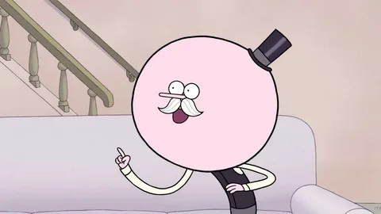

Леденец. Возраст Попса более 100 лет, в детстве он воспитывался Скипсом. Попс почти всегда находится в очень хорошем настроении. Он приходит в восторг почти от всего, что происходит вокруг него, и даже в плохой ситуации может увидеть положительные стороны. Несмотря на то, что Попс уже довольно пожилой, он все равно достаточно инфантильный и наивный. Чемпион реслинга. Кажется, что Мордекай и Ригби нравятся ему намного больше Бенсона, даже несмотря на то, что они безответственные, а Бенсон считает Попса своим лучшим другом. Отец Попса, Мистер Мэллард, является владельцем парка, кроме того, и сам Попс на самом деле имеет право отдавать распоряжения Бенсону, и даже уволить его, что подтверждается в одной из серий. Но, несмотря на это, гораздо чаще Попс сам работает в парке под руководством Бенсона. Кроме того, Бенсон несёт ответственность за Попса из-за его детского характера. У него всегда есть леденцы (которые считаются валютой на его родине). Попс родом из Карамелии (по словам Cartoon Network). В серии «Мастера розыгрыша» дан намёк, что его голова приобрела такую форму из-за опухоли мозга, появившейся из-за общения по допотопному мобильному телефону в 80-е годы; в дальнейшем это было опровергнуто — как оказалось, Попс относится к расе большеголовых человечков. В конце 8-го сезона умирает в смертельной схватке с АнтиПопсом.